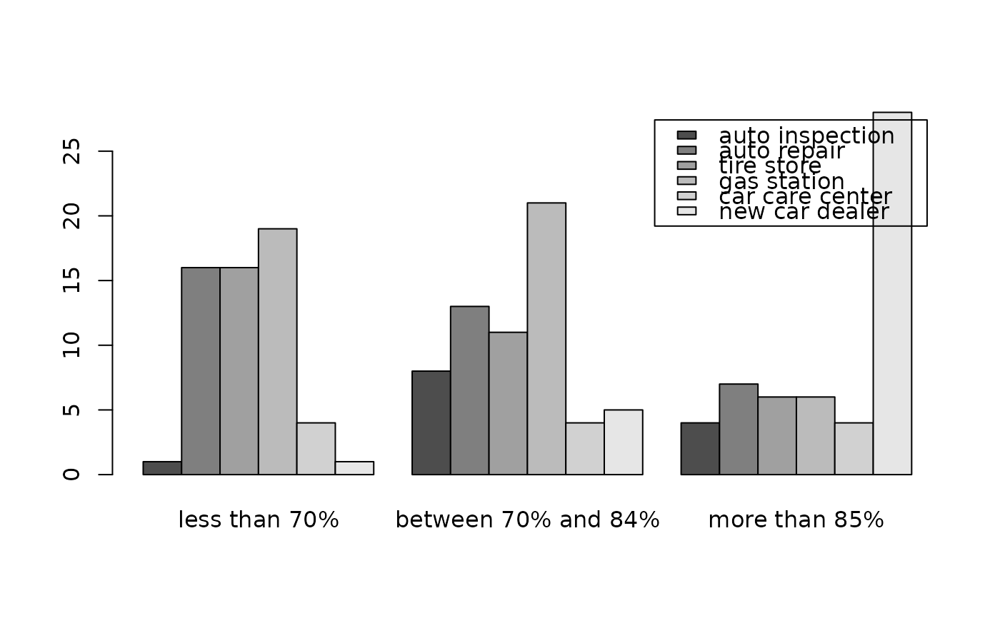

Data for Exercise 8.59
Inspect
A data frame/tibble with 174 observations on the following 2 variables.
a factor with levels auto inspection,
auto repair, car care center, gas station, new car
dealer, and tire store
a factor with levels less than 70%, between 70% and 84%, and more than 85%
The Charlotte Observer, December 13, 1992
Kitchens, L. J. (2003) Basic Statistics and Data Analysis. Duxbury
T1 <- xtabs(~ station + passed, data = Inspect) T1#> passed #> station less than 70% between 70% and 84% more than 85% #> auto inspection 1 8 4 #> auto repair 16 13 7 #> tire store 16 11 6 #> gas station 19 21 6 #> car care center 4 4 4 #> new car dealer 1 5 28barplot(T1, beside = TRUE, legend = TRUE)chisq.test(T1)#> Warning: Chi-squared approximation may be incorrect#> #> Pearson's Chi-squared test #> #> data: T1 #> X-squared = 61.027, df = 10, p-value = 2.316e-09 #>rm(T1)# NOT RUN { ggplot2::ggplot(data = Inspect, aes(x = passed, fill = station)) + geom_bar(position = "dodge") + theme_bw() # }